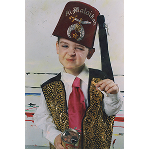

Ancillary Documentation

Exhibitions
Ron English Exhibition, Arte Vista The Pop-Art Gallery, Badhoevedorp, Netherlands, March 27, 2005.
Ron English, Mark Mothersbaugh & Daniel Johnston: 3 Man Art Exhibition, Copro/Nason Gallery, Santa Monica, California, US, September 17–October 15, 2005.
Literature
Ron English, Abject Expressionism: The Art of Ron English (San Francisco: Last Gasp, 2007), p. 119. ISBN 978-0867196894.

Ron English, Son of Pop: Ron English Paints His Progeny (San Francisco, California: 9mm Books and The Shooting Gallery, 2007), p. 21. ISBN 978-0976632511.

Ron English, Fauxlosophy: The Art of Ron English (San Francisco: Last Gasp, 2016), p. 100. ISBN 978-0867196566.

Ron English, Original Grin: The Art of Ron English (Paris: Cernunnos, 2019), p. 121. ISBN 978-2374950938.

David Hershkovits; (Beautiful) Paper - Beautiful People, “Get Met Or Pay - Retroactive Insurance now Available”. (Beautiful) Paper - Beautiful People, no. 10th annual, 2007, p. 59.
%20Paper%20-%20Beautiful%20People%20-%202007%20-%20Get%20Met%20Or%20Pay%20-%20Retroactive%20Insurance%20now%20Availab__p002.jpg?v=20260724071411)
David Hershkovits; (Beautiful) Paper - Beautiful People, “Get Met Or Pay - Retroactive Insurance now Available”. (Beautiful) Paper - Beautiful People, no. 10th annual, 2007, pp. 58–62.

R. Anthony Harris, “More crazy stories from street art Godfather Ron English”. RV A Magazine, 2014.

“Ron English”. Art2feedbrains, 2020, p. 13.

“Guernica,” Echange Espagne, May 10, 2017. Online article. Online.

“Guernica,” Echange Espagne, May 10, 2017. Online article. Online.
50 вариіации на „Герника“ од Пикасо, Okno, July 11, 2014. Online article.